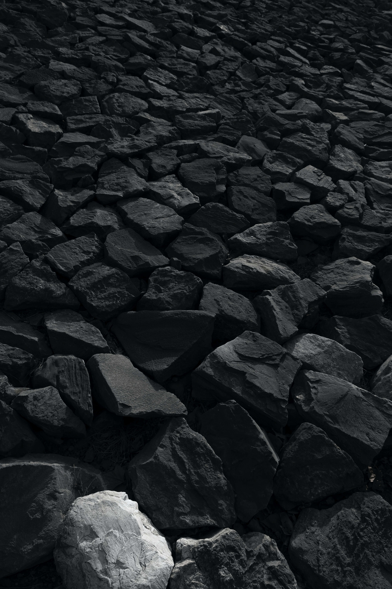

Babak
På denna hemsida har jag valt att hava allting väldigt färgglatt och ljust. Detta gillar jag för hemsidan blir mer livlig på så vis. Jag har valt att dedikera denna hemsida till Babak Majidzadeh Garjani eftersom han är en bra mattelärare. Jag har däför döpt denna hemsida till Babak Majidzadeh Garjani och jag har en bild på honom inkluderad.
Nu ska vi kanske prata om kod, för denna hemsida har jag kodat in mängder av olika funktoner som definitivt är värdiga det högsta betyged möjligt. Jag har sett till att om hemsidan ses på olika storleker ska det vara olika färger så att allas upplevelse blir smått annorlunda.

Det skulle absout vara roligare om alla de olika sidorna som är länkade faktisk hade olika saker på dem, men det har jag inte tid för och jag har förstått det som att det heller inte är nödvändigt för att uppnå ett magiskt betyg. Tilbaka till koden. Jag har sett till att texten ändras med skillnad i storlek på skärm samt har jag fixat så att alla olika textsnuttar är olika färger. Jag har gjort så att om man håller musen över min nav-bar så blir der en bra mängd färger, för att verkligen göra allt färgglatt.
Nav-bar:en har uttrustats med storlekskillnader så att den kan ändra form beroende på skärmstorlek för att göra allas upplevelse bra. Nav-bar:en är också gjord så att den har fina kanter ock så att "hem" är grön i vissa storleker. Den passar dock som best i storleken 1366px bredd, för att min skärm är så stror, men det finns som sagt ändå kod för att göra allas upplevelse bra. Jag hoppas att detta är så magiskt bra att Anderas Wahlstedt anser dena hemsida helt tip top.

Lists
An Unordered List of Some Veggies
- Cucumbers
- Onions
- Red onions
- Yellow onions
- Cabbage
An Ordered To-Do List
- Wake up
- Make coffee
- Drink coffee
- Make more coffee
- This is the first item
- This is the second item
- This is the third item
- This is the fourth item
- Add text here
- Add text here
- Add text here
Some popular sites
Click on a name to go to that page: